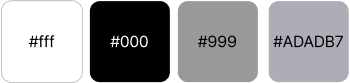
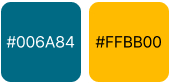
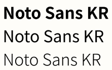
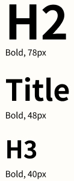
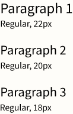

국립극단
국립극단은 연극 예술 발전을 선도하고, 국민들이 연극을 즐길 수 있도록 노력하는 우리나라 최초의 국립예술단체입니다.
이미지 활용으로 예술성을 높이고 웹사이트를 통해 정보를 효과적으로
전달하도록 리디자인하였습니다.
-
SkillsJavaScript / jQuery / Animate On Scroll Library
-
작업기간2024.06.12~2024.06.19
-
Keyword#예술성 #정보전달 #웹접근성
Goal
-
관람객이 필요한 정보를 쉽게 찾아볼 수 있도록 하고, 잠재적 관람객들의 연극 관람에 관한 흥미를 끌어올린다.
-
스크롤 위치에 따른 애니메이션 효과를 구현할 수 있다.
Style guide
-
티켓예매와 예매확인처럼 중요한 메뉴는 최상단 배너에 배치함
-
많은 정보를 담고 있던 기존 GNB -> 필수가 아닌 메뉴는 햄버거 아이콘을 사용함
-
고채도 저명도 색상을 사용하여 진중하고 무거운 분위기 -> 무채색을 사용하여 깔끔하고 한 톤 가벼운 분위기
-
공연 관련 이미지와 소개를 단순하게 배치함 -> 핵심 요소 이미지만 사용하고 소개와 함께 크고 눈에 잘 띄게 배치함
Keyword
#깔끔한 #모던한 #신뢰감 있는
Color
Primary color
Point color
Typography
Font Family
Headlines
Paragraph
Problem & Solution
-
기존 웹사이트 이미지들의 크기가 작음
→ 포토샵을 이용하여 크기를 늘리고 이미지 고화질 변환 사이트를 통해 해결함
-
인물들 간 겹쳐져 있는 이미지, 어둡고 빛번짐이 있는 이미지에서 특정 인물의 누끼만 따기가 어려움
→ 포토샵을 이용하여 배경 제거를 하고, 펜툴과 select and mask를 최대한 사용함
-
텍스트의 translateY 값이 변하면서 위로 올라오는 모습이 그대로 보임
→ 감싸고 있는 div에 overflow: hidden; 작성하여 해결함
-
grid-item 간에 세로 간격만 벌어졌으면 좋겠는데 gap으로는 불가함
→ grid를 사용한 다른 웹사이트의 코드를 보다가 ‘column-gap’이라는 CSS 속성을 알게 되어서 적용함
-
배경이미지들 때문에 헤더와 네비게이션이 클릭이 되지 않음
→ 배경이미지, 헤더와 네비게이션에 각각 z-index 값을 주어 해결함
-
Top 버튼이 footer 상단을 지나갈 때 사라지는 문제가 발생
→ 버튼에 z-index 값을 작성하여 해결함
-
스크롤의 움직임에 따라 이미지들이 움직일 때 가로 정렬이 딱 맞지 않음
→ 적합한 js 작성에 어려움이 있다고 판단, 좀 더 깔끔한 효과를 위해서 Animate On Scroll Library를 이용하여 커텐이 내려오듯이
이미지가 나타나는 효과로 변경함
Review
HTML 구조 작성 시 몇 번의 수정이 필요했고 계획대로 구현하지 못해 변경한 애니메이션도 있습니다.
하지만 이번 개인 프로젝트를 통해, 혼자의 힘으로 웹 퍼블리싱을 완성한 경험을 얻었습니다.
브랜드의 가치를 고려하여 적합한 디자인을 해야 한다는 점과 이미지 소스 관리의 중요성을 배울 수
있었습니다.
이번 경험을 통한 성과와 교훈은 웹 퍼블리싱 능력 향상에 도움이 될 것 같습니다.